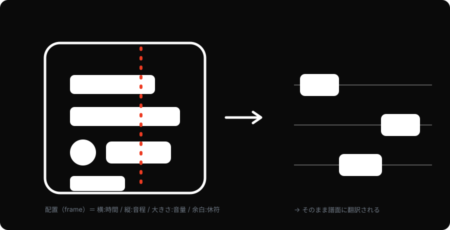
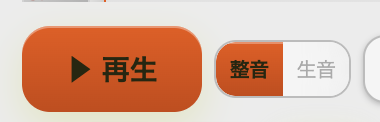
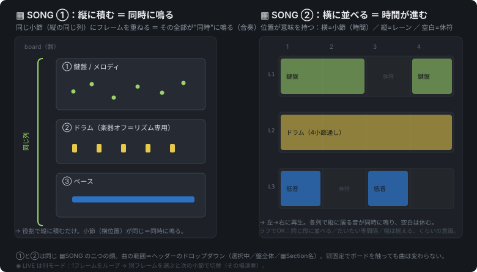
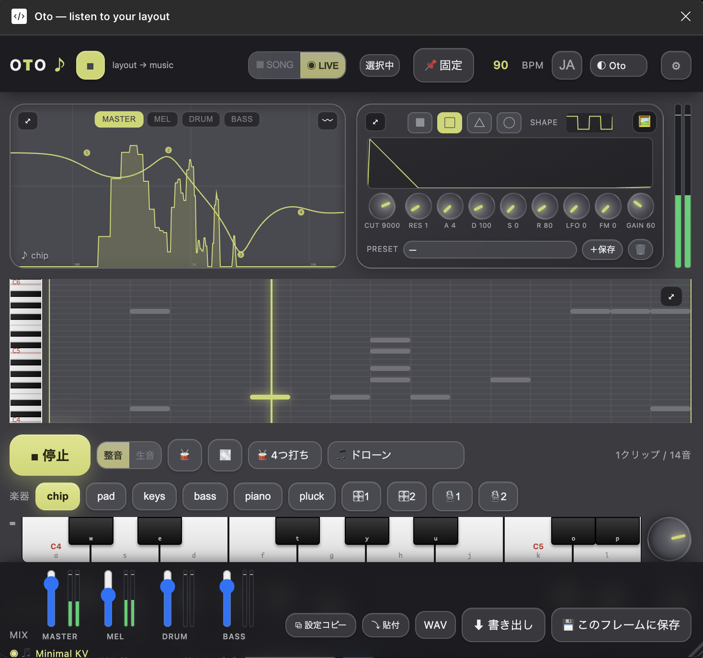
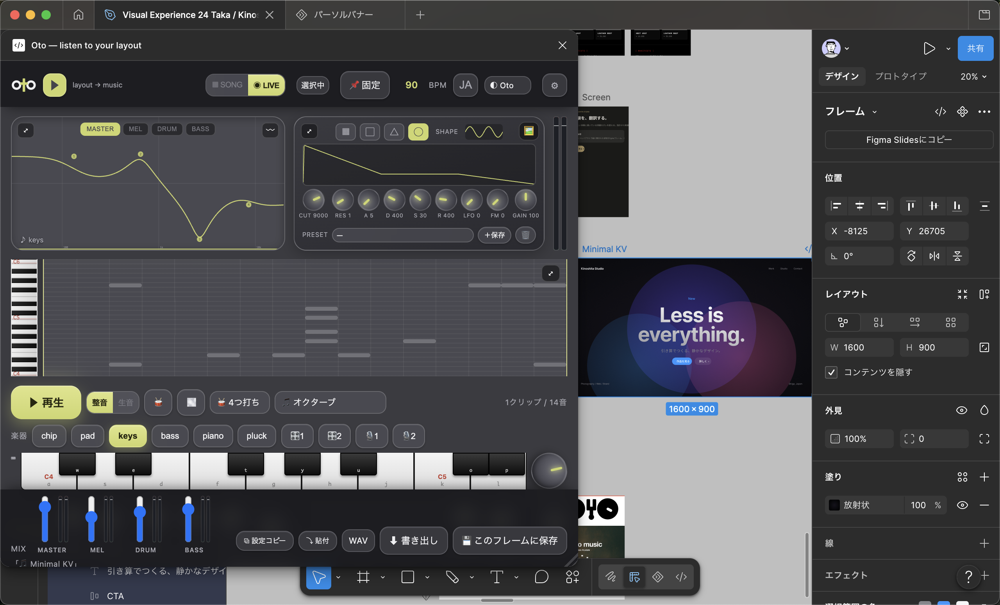
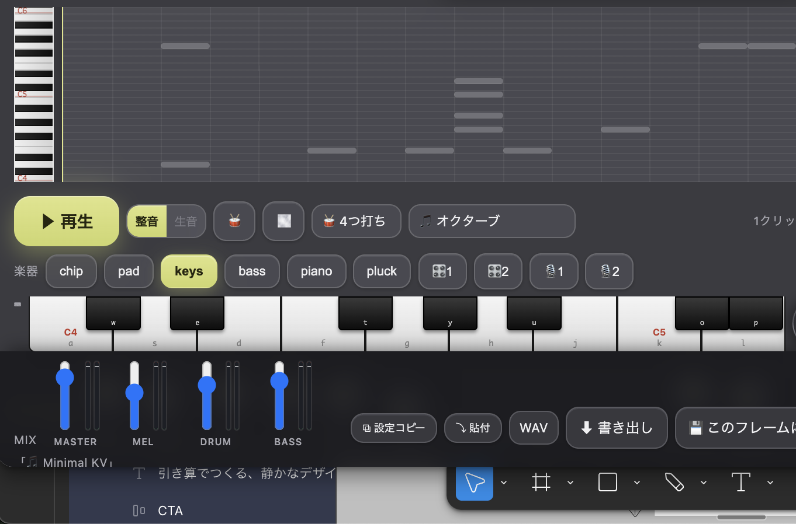
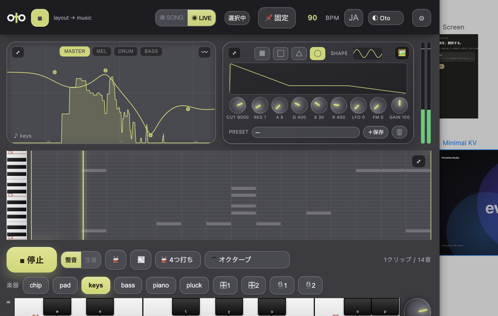

OtO は、Figmaのレイアウトの配置をそのまま音楽に翻訳するプラグイン。「作曲ソフト」ではない。あなたのデザインに最初から潜んでいた音を、翻訳して"発見"するための楽器だ。横＝時間、縦＝音程、大きさ＝音量、余白＝休符。判断は人、翻訳はAI——現役テクノ作家 99letters の思想を、そのままコードにした。2026年7月、Figma Community に申請。
作曲じゃなく、発見
別のUIを開いて音符を打ち込むのではない。選んだフレームの"配置"を読んで音にする。曲を作ろうとしていないのに、レイアウトは最初から歌っていた。OtO はそれを翻訳して、暴くだけだ。「狙って作った」ではなく「もとからそこにあった」——この一線が、ただのMIDIツールと OtO を分ける。

整音と、生音——二つの正直さ
同じ一枚のデザインが、二つの顔を持つ。整音＝スケールに乗せ、グリッドに量子化した"曲"。誰が鳴らしても心地よい、誰かに渡す面。生音＝Y座標そのままの微分音を、丸めずに。整える前の、設計図の生の鼓動。歪な瞬間も晒す。この正直さが、発見の核だ。整っていれば澄み、散らかっていれば濁る——レイアウトの"うるささ"が、音で分かる。

盤が、そのまま譜面
横＝進行、縦＝同時トラック、◉＝選んで起動。別UIを作らず、Figmaの盤面の配置そのものを譜面にした。盤を組むことが、曲の構成を組むこと。▦ SONG で複数フレームを並べ、メロ・ドラム・ベースを縦に積む。◉ LIVE なら、その場で切り替えて演奏する。

音数を減らすほど、美しい
音が少ないほど美しい——デザインも音楽も同じだ。余白＝休符。ミニマルなデザインほど、綺麗で少ない音が鳴る。これは木下スタジオの BIWAKO SILENCE と地続き。引き算の美学が、そのまま音の疎さになる。音数コントロールで、本物の"静けさ"に寄せられる。
整えるのを、やめてみる。
その"変さ"は、デザインの真実だ。
本物のDAWを、Figmaの中に
お遊びで終わらせない。3つの再生モード、自作シンセ×2、サンプラー×2、マルチバンドEQ、メーター、サイドチェイン、WAV/MP3 書き出し——本物のDAWを、丸ごとプラグインに収めた。全楽器は音色まで彫れ、EQで突き詰められ、サンプラーで好きな音源をメロディーに鳴らせる。深さが、"おもちゃ"にしない。数年前なら音響エンジニアのチームが要った領域を、ひとつのプラグインに。

たった3ステップで、鳴る
深さの裏で、入口はどこまでも軽い。①フレームを選ぶ → ②▶を押す → ③鳴る。音楽の知識も、打ち込みもいらない。選んで、押す。それだけで、デザインは歌い出す。上のバーに波形が走り、右にそのフレームの画像が浮かぶ——それが、あなたの設計の音だ。使い方も世界観も、サイトで先行公開している。




読み返しても、OtO——回文のロゴ
ロゴは O・t・O。左右対称の回文で、右から読んでも、左から読んでも "OtO"。これは製品の芯そのものだ——レイアウト⇄音楽、どちらの向きにも翻訳が通うことを、そのまま形にした。両端の O はリング、中央の t は十字。太い幾何形だけで組んだモノクロのモノグラムは、小さなファビコンでも大きなキーアートでも、同じ強さで効く。装飾を削るほど、音数を削るほど美しい——OtO の思想が、マークにも地続きで通っている。
最後の差は、機能でなく耳
二枚看板。静けさと余白の〈kinoshita studio〉と、現役テクノ作家〈99letters〉。デザインと音楽、両方を本気でやってきた人間にしか作れない。機能表では並べられても、最後に効くのは耳だ。判断は人、翻訳はAI——代表作『翻訳演奏』そのままに。それが、この製品の堀。
your design is already singing.
あなたのデザインは、もう歌っている。
今日のOtOは「レイアウトを音にするプラグイン」に見えるかもしれない。けれど芯は、デザイナーに"音に埋もれず、選び、鳴らす"力を渡すこと。作れることは、もう当たり前になった。次に問われるのは、そこに"作家の耳"を通せるか——OtO は、その一例だ。
※ OtO は 2026年7月に Figma Community へ申請。レビュー通過後に一般公開されます。LP・使い方・世界観は先行公開中。